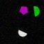
(1)
Exactly one red shape is a triangle.
Not five shapes are semicircles.
Less than one of the two red shapes is a triangle.
More than three magenta shapes are triangles.
Less than four of the three triangles are yellow.
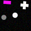
(2)
Three less triangles than squares are blue.
Three less triangles than squares are cyan.
Exactly four circles are cyan.
At most one square is a magenta square.
At most two squares are blue squares.
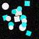
(3)
Three less pentagons than squares are magenta.
Exactly four of the eight squares are gray.
A quarter of the pentagons is a blue pentagon.
Half the squares are gray.
At least four of the eight squares are magenta.
(4)
At most five of the seven shapes are blue.
Not zero gray shapes are squares.
Exactly all shapes but one are blue ellipses.
At most one of the two ellipses is green.
Not zero blue shapes are blue ellipses.
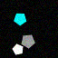
(5)
At least all magenta shapes but one are circles.
Less than four shapes are semicircles.
More than one shape is an ellipse.
Not three of the two semicircles are blue.
At least two blue shapes are pentagons.
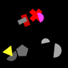
(6)
Two more semicircles than rectangles are gray.
At least two semicircles are gray.
More than four shapes are yellow triangles.
Not two of the five gray shapes are gray semicircles.
Less than zero of the four semicircles are magenta semicircles.
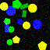
(7)
Most shapes are blue.
A few red shapes are circles.
Exactly three crosses are red.
More than all yellow shapes but one are yellow circles.
At most two of the two gray shapes are triangles.
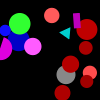
(8)
Two less pentagons than crosses are gray.
At least zero shapes are gray.
Three more triangles than crosses are gray.
Less than two blue shapes are blue squares.
All triangles are gray.
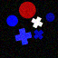
(9)
Two less rectangles than circles are gray.
At least two rectangles are gray.
At least two shapes are rectangles.
More than all yellow shapes but one are ellipses.
Less than one magenta shape is a semicircle.
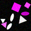
(10)
Exactly three red shapes are red ellipses.
Exactly zero of the eight red shapes are circles.
Exactly five of the seven ellipses are cyan ellipses.
Not one red shape is a rectangle.
Exactly one of the three red shapes is a red rectangle.
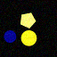
(11)
Not zero of the four yellow shapes are semicircles.
Not three of the five green shapes are triangles.
Less than three of the seven triangles are green triangles.
More than one of the five green shapes is a green triangle.
Less than all the four yellow shapes but one are triangles.
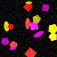
(12)
At least all the five squares but one are magenta.
Four more green shapes than gray shapes are rectangles.
Exactly one green shape is a green rectangle.
More than four green shapes are green rectangles.
At least two of the seven rectangles are green.
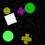
(13)
Not four blue shapes are ellipses.
A quarter of the blue shapes is a rectangle.
Exactly two pentagons are green.
Less than all the five red shapes but one are ellipses.
At least two of the seven green shapes are ellipses.
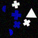
(14)
Most shapes are semicircles.
At least four of the six shapes are red semicircles.
Exactly one semicircle is red.
More than five gray shapes are ellipses.
More than one of the three gray shapes is a gray semicircle.
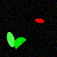
(15)
Exactly zero of the three green shapes are green rectangles.
At most two of the six shapes are yellow.
More than one shape is a blue circle.
Not five of the seven shapes are cyan ellipses.
Not four of the four ellipses are cyan.
(16)
Exactly one of the two gray shapes is a gray semicircle.
At most all semicircles but one are red semicircles.
No square is a red square.
More than five of the four semicircles are gray semicircles.
Less than five of the three shapes are yellow semicircles.
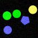
(17)
More than three of the seven shapes are cyan semicircles.
Less than one shape is a cyan square.
Most shapes are cyan.
At least two shapes are yellow semicircles.
At least three shapes are cyan rectangles.
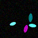
(18)
Not zero of the four yellow shapes are ellipses.
Exactly two shapes are cyan ellipses.
More than three cyan shapes are ellipses.
Not five of the three crosses are red.
Not zero of the four yellow shapes are triangles.
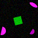
(19)
More than two yellow shapes are yellow squares.
Less than five of the seven yellow shapes are yellow pentagons.
At least three shapes are yellow.
Most squares are yellow.
At most zero crosses are gray crosses.
(20)
None of the seven shapes is a magenta square.
Less than three shapes are cyan triangles.
At least five shapes are triangles.
At least four of the five cyan shapes are triangles.
Less than all the three cyan shapes but one are circles.
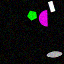
(21)
At least three gray shapes are gray squares.
Less than five of the six squares are gray.
At least two of the five gray shapes are squares.
Exactly zero of the three blue shapes are ellipses.
Exactly two of the eight shapes are blue squares.
(22)
At most one triangle is a yellow triangle.
At least zero of the seven cyan shapes are cyan triangles.
More than zero cyan shapes are rectangles.
At most one of the four yellow shapes is a square.
More than zero of the three magenta shapes are rectangles.

(23)
More than four shapes are yellow ellipses.
Exactly four pentagons are yellow pentagons.
At least two of the two yellow shapes are semicircles.
Less than all the four ellipses but one are cyan.
Most of the four semicircles are cyan.
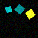
(24)
Not all gray shapes but one are gray rectangles.
A quarter of the five rectangles is a gray rectangle.
Five less green shapes than yellow shapes are pentagons.
At most one of the six gray shapes is a pentagon.
Exactly zero of the four pentagons are blue.
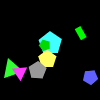
(25)
None of the eight shapes is a gray triangle.
Less than one of the two triangles is cyan.
At most two of the three triangles are green triangles.
A few of the eight shapes are green rectangles.
Three less triangles than rectangles are green.
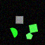
(26)
Less than three of the two gray shapes are rectangles.
At most all the six rectangles but one are magenta rectangles.
Not two gray shapes are squares.
More than two of the six rectangles are red rectangles.
Exactly four ellipses are gray ellipses.
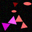
(27)
Less than five semicircles are cyan.
At most three of the seven cyan shapes are squares.
More than four cyan shapes are crosses.
Exactly all cyan shapes but one are cyan squares.
At most all the seven cyan shapes but one are cyan squares.
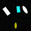
(28)
Exactly five green shapes are squares.
Less than all the four squares but one are cyan squares.
Not two of the two pentagons are yellow.
At least one of the three pentagons is red.
At most all red shapes but one are pentagons.
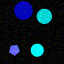
(29)
Exactly two semicircles are magenta.
Most of the three semicircles are magenta semicircles.
Exactly two magenta shapes are semicircles.
Exactly all the two red shapes but one are pentagons.
Exactly two of the two yellow shapes are semicircles.
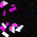
(30)
Less than all semicircles but one are magenta.
Four more squares than semicircles are red.
At most two shapes are cyan.
Four less ellipses than crosses are cyan.
More than zero cyan shapes are pentagons.
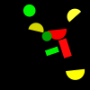
(31)
Exactly four of the seven shapes are green crosses.
Not four of the seven shapes are squares.
Not three of the seven shapes are green.
Exactly four shapes are rectangles.
Exactly five of the seven shapes are crosses.
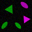
(32)
Exactly three of the eight shapes are red pentagons.
Less than two of the eight shapes are red.
At least zero shapes are red ellipses.
Exactly three of the seven pentagons are red.
Exactly two of the four red shapes are red pentagons.
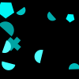
(33)
Exactly three of the six shapes are yellow.
Less than zero rectangles are cyan rectangles.
Less than all semicircles but one are yellow.
Most of the five yellow shapes are semicircles.
Most of the three yellow shapes are yellow semicircles.
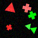
(34)
Two thirds of the seven shapes are squares.
Not two of the five squares are gray squares.
Exactly zero squares are yellow.
No square is blue.
More than one cyan shape is a square.
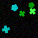
(35)
Not all shapes but one are crosses.
At most two of the eight gray shapes are gray rectangles.
A quarter of the six crosses is a magenta cross.
Less than one of the five crosses is a cyan cross.
At least four gray shapes are gray crosses.
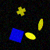
(36)
Less than five of the five crosses are yellow crosses.
At most all the five crosses but one are yellow crosses.
More than one of the two yellow shapes is a cross.
Not all the four blue shapes but one are triangles.
Not all the six shapes but one are green.
(37)
More than four of the eight magenta shapes are magenta circles.
Less than two of the eight magenta shapes are rectangles.
Not all the two blue shapes but one are blue circles.
At least three of the eight magenta shapes are magenta crosses.
Exactly four circles are magenta circles.
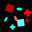
(38)
Exactly one of the three crosses is a gray cross.
Less than three of the five red shapes are rectangles.
At most zero pentagons are yellow.
Exactly one blue shape is an ellipse.
Not one of the two rectangles is red.
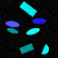
(39)
As many circles as ellipses are yellow.
No shape is a green ellipse.
A few ellipses are red.
Not zero of the three blue shapes are circles.
At least all red shapes but one are red ellipses.
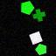
(40)
At least one of the two green shapes is an ellipse.
More than one shape is a cross.
At least all blue shapes but one are blue squares.
Not two blue shapes are ellipses.
More than two shapes are blue.
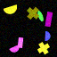
(41)
Exactly three of the eight shapes are magenta.
Exactly one of the five green shapes is a semicircle.
No yellow shape is an ellipse.
Exactly two shapes are green rectangles.
Exactly two of the three yellow shapes are semicircles.
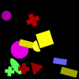
(42)
More than four shapes are red.
At most four of the four red shapes are red pentagons.
At most two pentagons are gray pentagons.
None of the six shapes is a red triangle.
A quarter of the four red shapes is a red rectangle.
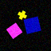
(43)
At least three of the eight shapes are gray circles.
Not two circles are green.
At least all semicircles but one are green.
More than three circles are yellow.
Three less circles than semicircles are green.
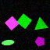
(44)
Less than two semicircles are green semicircles.
Less than one cross is magenta.
Less than five semicircles are green.
Not three green shapes are green crosses.
Exactly five of the six shapes are green.
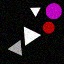
(45)
At most five of the five rectangles are yellow rectangles.
Not zero blue shapes are blue rectangles.
Exactly zero of the seven rectangles are red.
More than three shapes are blue semicircles.
At least three shapes are rectangles.
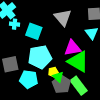
(46)
Less than all the two squares but one are cyan squares.
At most one triangle is green.
At most three squares are cyan.
Twice as many red shapes as cyan shapes are triangles.
Five more green shapes than magenta shapes are triangles.
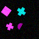
(47)
Exactly all the four magenta shapes but one are magenta ellipses.
At most five of the four circles are gray circles.
Less than all the six shapes but one are magenta semicircles.
Less than three of the three circles are blue.
Not three of the six shapes are semicircles.
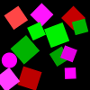
(48)
Four more circles than rectangles are cyan.
More than three of the seven cyan shapes are cyan circles.
Exactly one of the three rectangles is a blue rectangle.
More than two circles are cyan circles.
All circles are red.
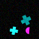
(49)
Three quarters of the seven shapes are semicircles.
Less than one shape is a magenta ellipse.
At least three of the eight shapes are magenta semicircles.
Exactly two of the two pentagons are magenta.
At most all the six magenta shapes but one are semicircles.
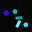
(50)
Three less cyan shapes than red shapes are circles.
Not three green shapes are green circles.
Two more circles than rectangles are red.
Not zero circles are blue.
A few of the four circles are green.
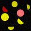
(51)
At most five green shapes are ellipses.
Exactly all green shapes but one are ellipses.
As many ellipses as circles are green.
At most three of the three green shapes are ellipses.
At least zero gray shapes are ellipses.
(52)
Most gray shapes are gray rectangles.
Less than three gray shapes are circles.
At least two of the eight pentagons are red.
At most three shapes are rectangles.
At most two shapes are gray.
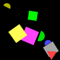
(53)
At least zero yellow shapes are yellow squares.
Exactly one of the four ellipses is a cyan ellipse.
Exactly zero shapes are cyan triangles.
A few of the three blue shapes are ellipses.
Two less blue shapes than cyan shapes are ellipses.
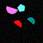
(54)
At least two of the eight blue shapes are blue pentagons.
Exactly one shape is a blue cross.
More than five shapes are blue crosses.
At least all crosses but one are green.
Most green shapes are green semicircles.
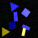
(55)
A few of the five semicircles are magenta.
No cross is green.
Less than five of the four yellow shapes are semicircles.
More than five semicircles are green.
At most one yellow shape is a semicircle.
(56)
More than one of the three yellow shapes is a yellow rectangle.
At least one of the six rectangles is a yellow rectangle.
Less than three of the two blue shapes are blue rectangles.
Less than five blue shapes are blue rectangles.
Not one of the two gray shapes is a rectangle.
(57)
Five more cyan shapes than magenta shapes are triangles.
At most five triangles are cyan triangles.
Not all cyan shapes but one are triangles.
At least four of the eight triangles are magenta.
Not three shapes are cyan triangles.
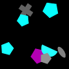
(58)
As many ellipses as pentagons are magenta.
Not all squares but one are magenta.
Less than four of the seven shapes are yellow circles.
Not four of the six shapes are rectangles.
Less than three magenta shapes are magenta semicircles.
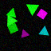
(59)
At most five of the three gray shapes are gray circles.
More than two of the three circles are green circles.
At most two crosses are gray.
At most five of the five gray shapes are circles.
Less than four shapes are gray.
(60)
A quarter of the seven pentagons is a green pentagon.
More than all shapes but one are red pentagons.
Not one of the four green shapes is a cross.
No red shape is a cross.
Not two of the seven pentagons are red pentagons.
(61)
No semicircle is cyan.
At least two magenta shapes are magenta triangles.
At least two of the six magenta shapes are pentagons.
As many semicircles as triangles are magenta.
Exactly one of the four shapes is blue.
(62)
Exactly two pentagons are gray.
Not two of the six pentagons are blue.
Not two of the six gray shapes are pentagons.
As many red shapes as magenta shapes are circles.
At least five pentagons are blue.
(63)
Three less crosses than ellipses are cyan.
More than three cyan shapes are cyan crosses.
Exactly two of the eight cyan shapes are cyan crosses.
At most five of the eight shapes are cyan crosses.
More than five cyan shapes are crosses.
(64)
At most three of the eight circles are green.
More than all shapes but one are green circles.
No shape is a cyan rectangle.
Exactly five blue shapes are blue crosses.
At most three of the three blue shapes are blue circles.
(65)
At least three of the six shapes are blue.
At most all the two triangles but one are cyan.
Not one shape is a circle.
At most zero of the six shapes are gray semicircles.
As many green shapes as cyan shapes are triangles.
(66)
At most zero of the two pentagons are green.
Not four of the two yellow shapes are pentagons.
Half the two green shapes are ellipses.
At least four of the eight shapes are green rectangles.
Exactly two rectangles are gray.
(67)
More than two of the six semicircles are cyan.
A few of the two red shapes are red semicircles.
At most two yellow shapes are semicircles.
No cyan shape is a cyan semicircle.
More than zero of the three cyan shapes are cyan semicircles.
(68)
Exactly all red shapes but one are squares.
More than three shapes are red squares.
More than three squares are red squares.
Not five shapes are blue.
At most all shapes but one are red.
(69)
A quarter of the shapes is a red ellipse.
Exactly all shapes but one are ellipses.
At most three of the six ellipses are red.
At most five of the five ellipses are magenta ellipses.
A few of the two yellow shapes are ellipses.
(70)
More than one yellow shape is a square.
At most one square is yellow.
More than four shapes are red.
Exactly one shape is a yellow triangle.
Not one cyan shape is a circle.
(71)
Five more crosses than circles are yellow.
Less than five shapes are cyan squares.
Less than five of the three yellow shapes are circles.
Most of the six yellow shapes are circles.
More than one shape is a yellow triangle.
(72)
At most four of the three shapes are triangles.
Less than all green shapes but one are green pentagons.
Not zero squares are green.
Not zero green shapes are rectangles.
Exactly four shapes are green semicircles.
(73)
More than two of the four triangles are blue triangles.
As many red shapes as yellow shapes are squares.
At most three shapes are magenta triangles.
Exactly five of the four squares are blue squares.
Not all rectangles but one are magenta.
(74)
At least five red shapes are red squares.
At most five red shapes are ellipses.
At most three shapes are squares.
More than two ellipses are red ellipses.
At least four of the four squares are red squares.
(75)
More than all the two green shapes but one are circles.
Exactly two of the three cyan shapes are cyan circles.
Half the six circles are cyan.
At most four of the four circles are green.
Not zero of the four circles are green.
(76)
More than four red shapes are squares.
Exactly three of the two circles are blue.
More than four of the two red shapes are red squares.
Exactly one of the five shapes is a square.
More than all circles but one are gray circles.

(77)
None of the six shapes is a gray cross.
At most all the six shapes but one are yellow.
At most one of the five yellow shapes is a pentagon.
Not one shape is a yellow triangle.
Not two of the four red shapes are red triangles.
(78)
At most all the five blue shapes but one are blue ellipses.
At most five blue shapes are blue ellipses.
Not zero of the three gray shapes are pentagons.
More than all the two magenta shapes but one are magenta crosses.
Less than four of the three blue shapes are circles.
(79)
At least four of the four yellow shapes are yellow rectangles.
Exactly zero of the six yellow shapes are rectangles.
Not all shapes but one are yellow rectangles.
At least zero of the three crosses are magenta crosses.
At most one cross is a magenta cross.
(80)
Not four pentagons are green pentagons.
At most three circles are blue circles.
Not two of the five green shapes are green semicircles.
At most two pentagons are green pentagons.
Exactly three shapes are semicircles.
(81)
Less than four of the two semicircles are blue.
At most zero of the four rectangles are gray.
Not zero of the four cyan shapes are pentagons.
Exactly five shapes are blue semicircles.
Less than two of the two semicircles are cyan semicircles.
(82)
Twice as many cyan shapes as green shapes are semicircles.
At most four of the three semicircles are green.
At least two rectangles are green.
At least one semicircle is green.
At most four of the five green shapes are green squares.
(83)
Five more triangles than semicircles are blue.
At most five of the six blue shapes are circles.
Not all the two triangles but one are blue.
At most three circles are red.
No shape is a square.

(84)
At least two ellipses are magenta ellipses.
More than all green shapes but one are triangles.
Less than all the eight shapes but one are magenta.
Less than all the eight shapes but one are green ellipses.
Not one shape is a green ellipse.
(85)
More than three blue shapes are crosses.
At most zero of the three ellipses are blue ellipses.
Two more crosses than ellipses are blue.
More than two of the five ellipses are blue.
Less than one blue shape is a rectangle.
(86)
Exactly five shapes are red semicircles.
More than one of the eight semicircles is green.
At most two of the seven semicircles are yellow semicircles.
No shape is a magenta semicircle.
More than zero magenta shapes are crosses.
(87)
Five more blue shapes than yellow shapes are triangles.
A few of the five green shapes are triangles.
At least zero of the eight magenta shapes are triangles.
At least three of the eight shapes are blue triangles.
At most four triangles are yellow triangles.
(88)
Not four of the five shapes are red pentagons.
At least five shapes are blue pentagons.
At least two of the three pentagons are red.
At least three pentagons are red.
Less than four shapes are red.
(89)
At most five of the three circles are green circles.
A few of the eight shapes are circles.
Exactly one semicircle is red.
At most three red shapes are red pentagons.
Less than five of the four red shapes are circles.
(90)
At most two shapes are ellipses.
Exactly five shapes are yellow ellipses.
More than four shapes are cyan ellipses.
At most four of the eight ellipses are magenta ellipses.
Less than two of the six magenta shapes are magenta ellipses.
(91)
More than all magenta shapes but one are magenta ellipses.
Less than all the seven magenta shapes but one are crosses.
Exactly all the six semicircles but one are magenta semicircles.
More than zero of the two circles are magenta.
At least all the four circles but one are magenta.
(92)
At most four of the four semicircles are red.
Less than two of the four red shapes are rectangles.
Less than two of the four red shapes are red semicircles.
Exactly five rectangles are red.
No red shape is a red rectangle.
(93)
At least zero crosses are green.
At least one of the four yellow shapes is a cross.
Not four crosses are yellow.
Not one shape is a yellow rectangle.
More than four circles are green circles.
(94)
A quarter of the eight semicircles is a green semicircle.
At most five magenta shapes are magenta semicircles.
Exactly zero magenta shapes are crosses.
At most five of the three triangles are magenta.
At least five crosses are magenta.
(95)
More than all the five shapes but one are green.
A quarter of the four rectangles is green.
More than five of the five shapes are cyan.
Exactly zero of the four rectangles are yellow.
At most five rectangles are green rectangles.
(96)
More than five of the eight shapes are blue.
At most four ellipses are blue ellipses.
Less than four of the three ellipses are yellow.
Less than five ellipses are blue ellipses.
Four less blue shapes than yellow shapes are crosses.
(97)
No gray shape is a gray pentagon.
At most five of the three gray shapes are gray pentagons.
At most zero shapes are green semicircles.
Not five shapes are squares.
Exactly four gray shapes are gray squares.
(98)
More than five circles are gray circles.
Not one of the three ellipses is red.
Not zero shapes are blue circles.
Not three shapes are yellow.
Less than four of the two pentagons are magenta.

(99)
At most one shape is a blue semicircle.
Less than five of the six blue shapes are blue semicircles.
More than one of the five semicircles is a blue semicircle.
Less than two shapes are blue circles.
As many rectangles as pentagons are blue.
(100)
Three more crosses than squares are gray.
Exactly five pentagons are yellow pentagons.
Exactly four gray shapes are crosses.
Less than three of the six gray shapes are gray squares.
Exactly all gray shapes but one are crosses.